MATLAB scripts for alternating direction method of multipliers
This page gives MATLAB implementations of the examples in our paper on distributed optimization with the alternating direction method of multipliers.
These scripts are serial implementations of ADMM for various problems. In cases where the scripts solve distributed consensus problems (e.g., distributed 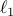-regularized logistic regression), the code runs serially instead of in parallel. These scripts give an idea of the structure and flavor of ADMM; an implementation in C/C++ that follows the structure laid out in our scripts and exploits parallelism can be competitive with state-of-the-art solvers for these problems. These are presented in MATLAB for readability. Unless otherwise noted on this page, most scripts stand alone and work in Matlab without further modification. Some scripts may require CVX.
As output, each example script displays the primal residual  , the
primal feasibility tolerance 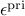, the dual residual
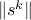, and the dual feasibility tolerance 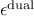. See
section 3.3 of the paper for more details on these quantities. Also included
are plots of the objective value and the primal and dual residual by
iteration. Note that the objective value at any particular iteration can go
below the true solution value 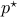 because the iterates need not be
feasible (e.g., if the constraint is 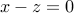, we can have 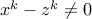 for some 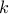).
, the
primal feasibility tolerance 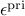, the dual residual
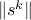, and the dual feasibility tolerance 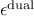. See
section 3.3 of the paper for more details on these quantities. Also included
are plots of the objective value and the primal and dual residual by
iteration. Note that the objective value at any particular iteration can go
below the true solution value 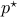 because the iterates need not be
feasible (e.g., if the constraint is 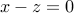, we can have 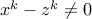 for some 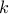).
You can use the grabcode function built in to MATLAB to obtain these codes. Please report any issues to the authors.
Examples
Basis pursuit
Sparse inverse covariance selection
Huber fitting
Intersection of polyhedra
Lasso
Lasso with LSQR, an iterative method for solving sparse systems 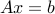
Least absolute deviations
Linear programming
-regularized logistic regression
Distributed -regularized logistic regression
ADMM function - also requires l2_log, l2_log_grad, record_bfgs_iters, and LBFGS-B for Matlab.
Regressor selection (nonconvex problem)
Quadratic programming
Sum-of-norms regularization (group lasso)
Sum-of-norms regularization (group lasso) with feature splitting
Support vector machine
Total variation minimization